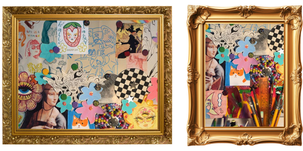

Aquarela
Adoro pintar com aquarela durante meu tempo livre. É uma forma de expressão que une percepção e criatividade, e me ajuda a relaxar.
Para mim, esse momento de pintura é também um exercício de paciência e presença, em que consigo me desconectar da correria do dia a dia.
